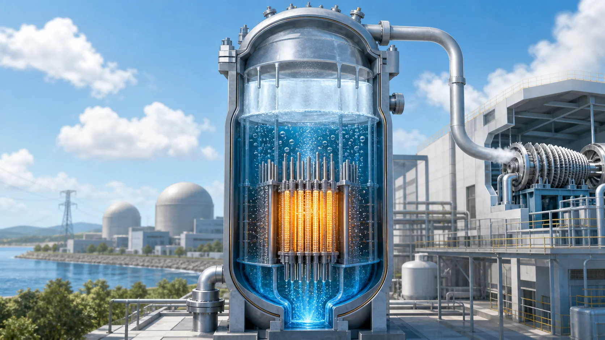
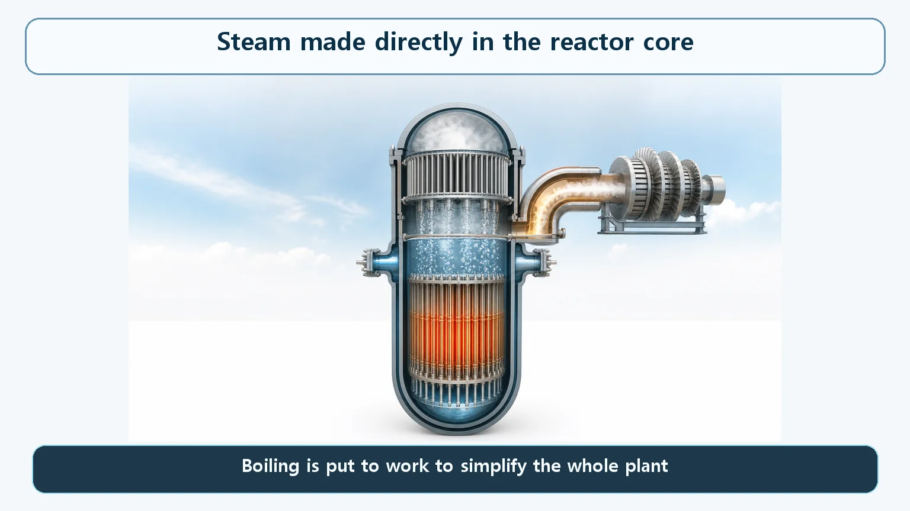
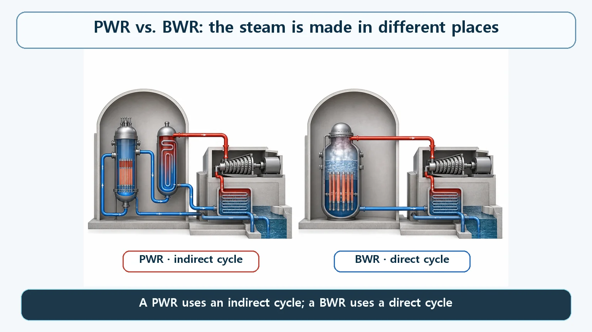

Heat Transfer & Thermal Hydraulics · 141
Taking the Lid Off the Pressure Cooker — Why a Boiling Water Reactor Boils Inside the Core
One light water reactor fights boiling at every turn; the other makes steam right in the core and drops the steam generator altogether.

A boiling water reactor (BWR) keeps its pressure comparatively low and lets the coolant boil inside the core on purpose. The steam goes, after separation and drying, straight to the turbine, so the plant needs no steam generator and no separate secondary loop. Boiling here is the designed normal state, run with ample margin from the point where heat transfer deteriorates.
Swap the pressure cooker for an open steamer
A pressurized water reactor turns its primary system into a giant pressure cooker, squeezing the coolant (water) so hard that it never boils, even at well over 300 °C. "No boiling in the core" is its iron rule. The boiling water reactor made the opposite choice: keep the pressure comparatively low and actively let the coolant boil inside the core. Same water, same kind of core, yet one design fights boiling while the other welcomes it.
If the pressure cooker is a pot with its lid clamped down, a BWR is closer to an open steamer at a rolling boil. Boiling is expected, and the steam is put straight to work: over a steamer the rising steam cooks the dumplings; in a BWR it flows up through piping and spins the turbine.
The designers simply answered "Why prevent boiling?" differently. A PWR avoids it because liquid water transfers heat better than steam and is easier to manage as a flow. BWR designers asked why one should work so hard to keep the water liquid, only to move that heat through a separate steam generator and make steam all over again. Make the steam in the core and the whole plant gets simpler. Boiling stops being only a hazard and becomes an efficient way to carry heat and produce steam.
Water enters the bottom of the core still below its boiling point. As it rises and absorbs fission heat, small bubbles start forming on the fuel surfaces and breaking away into the water. This is nucleate boiling, the "good" kind of boiling that carries heat away very efficiently. Higher up, the share of bubbles keeps growing, so what leaves the top of the core is a mixture of liquid and steam.

Doing away with the steam generator altogether
In a PWR, the primary system that flows through the core and the secondary system that boils water using that heat are completely separate. The two waters never mix; a heat exchanger, the steam generator, sits between them.
A BWR has no such division. Steam made in the core passes through steam separators and steam dryers (devices that strip out water droplets) at the top of the reactor pressure vessel, and then that same steam goes directly to the turbine. After the turbine, the condenser turns it back into water, which returns to the core as feedwater. The place that makes the heat and the place that makes the steam are one and the same.
This is a direct cycle; the PWR's two-loop arrangement is an indirect cycle. The plant needs fewer components (no steam generators, no separate secondary piping and pumps for them), while the single pressure vessel takes on the extra jobs of making, separating and drying steam.

| PWR | BWR | |
|---|---|---|
| Where steam is made | Steam generator (secondary loop) | Reactor core |
| Cycle | Indirect (two loops) | Direct (one loop) |
| Pressure vessel pressure | About 15.5 MPa | About 7.2 MPa (about 70–72 bar, about 1,000 psi) |
| Coolant in the core | Kept below the boiling point (subcooled) | Near the boiling point, about 286–288 °C |
Inside a BWR pressure vessel the pressure is kept at around 7.2 megapascals (MPa), about half of a typical PWR design value of about 15.5 MPa. The exact operating pressure differs by BWR generation and vendor, so this is a representative range. At this pressure water boils (its saturation temperature) at about 286–288 °C. Where a PWR aims for a clear margin below the boiling point (subcooling), BWR coolant flows right around that boiling point over much of the core.
Boiling, but never just any boiling
"A reactor that boils" can sound like a reactor out of control, but the reality is the opposite. Not all the water entering the core turns to steam. The fraction that becomes steam by the core exit (the steam quality, the share of the total mass that is steam) averages only about 14–15%, a representative value that varies with design and power level. The remaining 85% or more stays liquid, is separated from the steam, and circulates back down to the bottom of the core.
The distinction between good boiling (nucleate boiling) and bad boiling (film boiling beyond the critical heat flux, CHF) applies to a BWR just as much. It is designed to run inside the efficient nucleate-boiling regime, with ample thermal margin from the boundary where heat transfer suddenly deteriorates. Boiling is not a warning sign; it is the normal state this reactor was designed for.
When the coolant is also the moderator
In a light water reactor, water is both the coolant and the moderator that slows neutrons down. Because boiling is part of normal BWR operation, the share of the core occupied by bubbles (the void fraction) shifts with power level. More bubbles mean less dense liquid water, less moderation, and a push toward lower reactivity (the tendency of the chain reaction to grow or shrink). It is one of the self-stabilizing features that tend to hold power back if it rises too far.
This gives the BWR a distinctive trait: within a certain range, it can change power without moving control rods, just by adjusting the coolant flow pumped through the core (the recirculation flow). The details belong to reactor operation, a topic for another day.
Why the turbine sits inside a radiation-controlled area
While the water passes through the core, it reacts with neutrons and produces a trace of nitrogen-16 (N-16), which is radioactive only very briefly (half-life of about 7 seconds). Carried along in the steam, it travels to the turbine.
So in a BWR the turbine building is managed as a radiation-controlled area like the reactor building, and access near the turbine is restricted during operation. Because N-16 decays so quickly, radioactivity drops sharply within minutes of shutdown, and access becomes possible relatively soon afterward. A PWR keeps core coolant and steam-making in separate loops, so this turbine activation does not occur there. That is not a claim that one type is more dangerous; it is the radiation management that follows from the direct cycle, and both types apply protection and access control in line with international standards.
Easy to confuse
Boiling is not meltdown. Boiling is the ordinary change of water from liquid to gas, and in a BWR it is the intended normal state. A meltdown is an accident in which cooling fails and the fuel itself melts. Being a boiling reactor does not mean being a dangerous one.
"A BWR must boil water somewhere else too." No. In the direct cycle the core itself is where the steam is made; there is no separate boiling device outside it, which is exactly what "no primary/secondary split" means.
Key takeaways
- A BWR keeps the pressure comparatively low, lets the coolant boil in the core, and sends that steam, after separation and drying, straight to the turbine.
- Using core steam directly means no steam generators and no separate secondary system: a simpler direct cycle.
- Only about 14–15% of the water becomes steam; the rest is separated and recirculated.
- Boiling is the designed normal state, and the BWR keeps ample margin from the point where heat transfer deteriorates, the same principle as a PWR.
- Core steam reaches the turbine, so the turbine building is a radiation-controlled area: a management difference, not added danger.